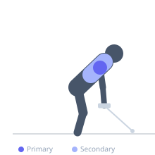
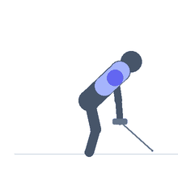

Exercise guide / Cross-Cable Rear Delt Row
Cross-Cable Rear Delt Row
The cross-cable rear delt row uses a cable crossover station with the cables set at upper chest height and crossed (right hand grips left cable, left hand grips right cable). The crossed configuration creates a unique pulling vector that emphasizes horizontal abduction with an adducted scapular endpoint, maximally loading the posterior deltoid and rhomboids through the full range of motion. The cable tension remains constant through the entire pull — unlike dumbbells, which lose tension at the beginning of the movement.
Primary muscles
deltoid posterior
Secondary muscles
rhomboid major
trapezius middle
Stabilizers
infraspinatus
Equipment
Cable Machine (High Pulley)


Starting position
- Stand in the center of a cable crossover machine. Set both pulleys to upper chest height. Cross the cables — grip the right cable handle with the left hand and the left cable handle with the right hand. Arms extended forward at chest height.
Setup
- Moderate weight on each stack. Stand with feet staggered slightly for balance.
Steps
- Step 1: Begin with arms extended forward, cables crossed at chest height.
- Step 2: Pull both handles outward and back simultaneously, leading with the elbows.
- Step 3: Keep the elbows at shoulder height through the entire pull.
- Step 4: At the end of the row, the hands are out to the sides and the rear delts are fully contracted.
- Step 5: Hold 1 second. Return under control.
Coaching cues
- Elbows at shoulder height — not dropping
- Pull apart like you're opening a door wide
- Squeeze the rear delts at the endpoint
Breathing
- Exhale pulling back. Inhale returning.
Range of motion
- Full extension (cables crossed at chest) to full horizontal abduction (hands at sides).
Tempo
- 2-1-2-0
Common mistakes
- Elbows dropping below shoulder level — keep them at shoulder height throughout
- Using torso rotation to generate momentum
Safety
- Moderate load — the constant cable tension accumulates quickly
- Keep the core braced to avoid torso rotation
Training
- hypertrophy: 12–20 reps
- hypertrophy: 3–4 sets
- Rest: {'hypertrophy': 60}